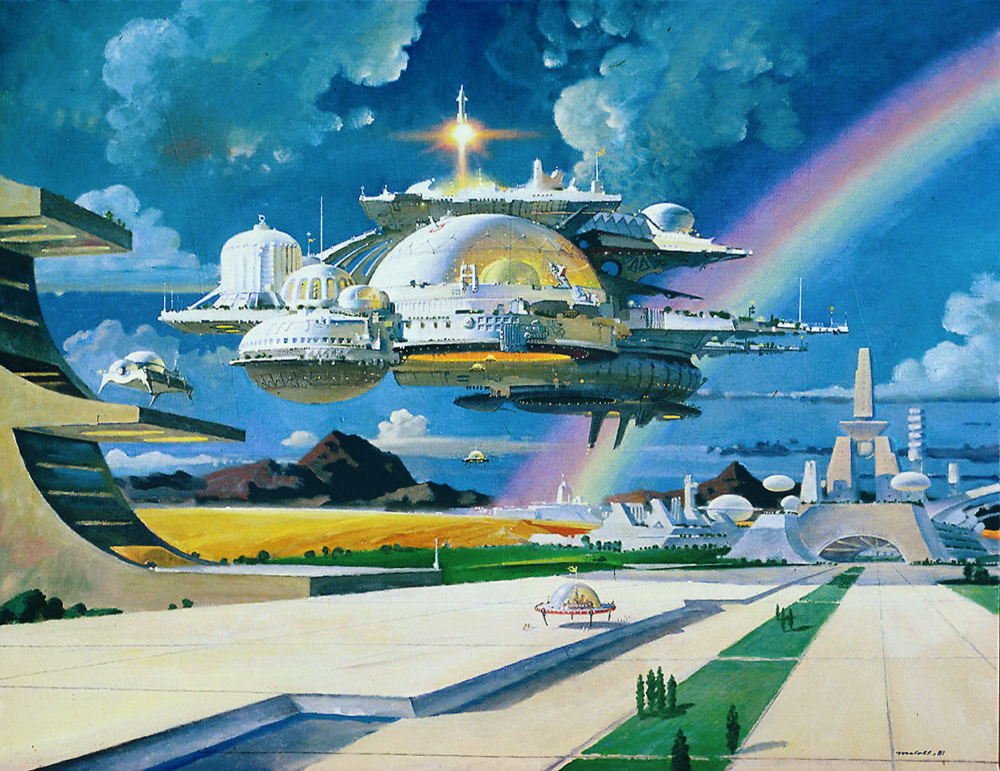

For any society there are only three main sources of growth:
However, both population and natural resources face constraints, both real or political. This leaves us with one truly boundless source of growth: technology. The transcendence of technology in daily lives is inevitable.
We stand at the beginning of a transformative era. Widespread adoption of technology is set to reshape culture, society, and the global political economy. Technology is not just an enabler of innovation—it is the very foundation of humanity’s advancement and will remain so for generations to come.
Artificial Intelligence lies at the heart of this transformation. As the next logical step in societal evolution, it holds the key for unlocking new levels of progress. The human mind and its various quirks are what led our species to the place we are in right now; simulating it will be the key for further advancements.
Robotics and Super-scale computing will further accelerate this digital revolution. The world will be rewritten with new data structures and algorithms. Wars will no longer be fought with human soldiers—any civilization clinging to old ways will be left behind. With no human lives ever harmed, battle will become a game of pure strategy and technological prowess. And we are so in for robo-wars.
This is the only time in the history of humanity that we have had a singular all-supreme power state: The United States. Obviously, the US is here to stay; Rome did not fall in a day, neither is the US going to (anytime soon). But there will be uprisings from other parts of the world due to the leveraging effect of technology.
China, Europe, and India will become major players on the world stage in the years to come due to their rapid adoption on technology.
It's a front, an effort dedicated to the holistic enhancement of human potential through technological innovation. The goal here is not just to create cutting-edge models which obliterate all benchmarks but to make an impact.
A tool is only as good as you use it, and we are here to change the future of humanity.
It's a task easier said than done; open communication and collaboration were the core reasons we homo-sapiens developed into the species we are today. But this requires more, as the stakes are higher and the probability of doom is significantly raised. But what's fun without some existential risk?
At Five, we believe technology is inherently neutral—a powerful tool that can be wielded for both good and harm. Its impact depends on those who wield it. As Plato once questioned, who defines what is good or evil? It’s a fair debate, and while we don’t claim to have the answer, our mission is clear: to accelerate technology’s development and make it accessible to all, empowering society to decide for themselves. We believe the power of innovation shouldn’t reside in the hands of a select few, but in the hands of the many.
As we embark on this journey toward a more enlightened and advanced society, it is essential to delve into the core principles that underpin Five.
Abundance creation:
To quote Marc Andreessen (@pmarca):
Give us a real-world problem and we can invent technology that will solve it.
Starvation was a problem, so we invented the Green Revolution.
Darkness was a problem, so we invented electric lighting.
Diseases were a problem, so we invented vaccines.
The cold was a problem, so we invented indoor heating.
Heat was a problem, so we invented air conditioning.
Isolation was a problem, so we invented the Internet.
Now we have a problem of poverty, so we invent technology to create abundance.
Invention leads to creation
Ethics of Artificial Consciousness:
As we explore machine consciousness and Qualia, we must consider its ethical implications. How will creating a create sentient AI change society? What rights should be granted to artificial beings?
The Dialectic of Human and Artificial Intelligence:
The merging of humans and AI will give rise to entirely new beings—beings that may mirror the power of Greek legends. We must carefully navigate around this scenario so as to to avoid dystopian futures. Could this integration lead to a completely new form of consciousness?
Philosophical Implications of Technological Singularity:
What are the limits of human potential in a post-singularity world? Is AI truly the "Last Invention"? As we approach this tipping point, how do we ethically and philosophically prepare for a future we dont fully comprehend?
Simulated creativity: Having a sense of aesthetics is dramatically more useful than being marginally more intelligent, and we are not letting our digital babies be without it.
"Mathematics, rightly viewed, possesses not only truth, but supreme beauty—a beauty cold and austere, like that of sculpture ... sublimely pure, and capable of a stern perfection such as only the greatest art can show."
~ Bertrand Russell
We are Five, the leaders of a new frontier.
The goal here is for humanity to reach a technological singularity. To climb the Kardashev scale.
For we are too late, and the stars are calling.
Fellow creators, the creator seeks.
Join us